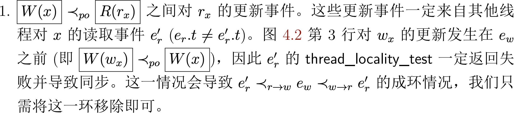
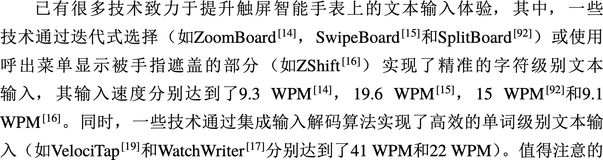
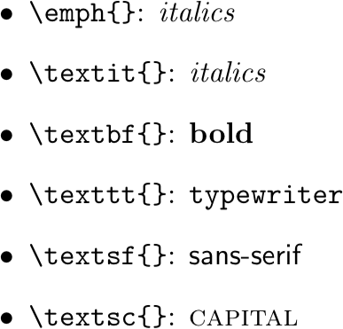
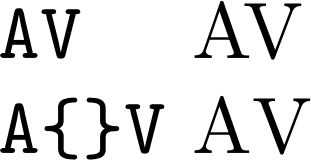
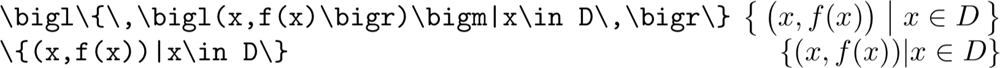
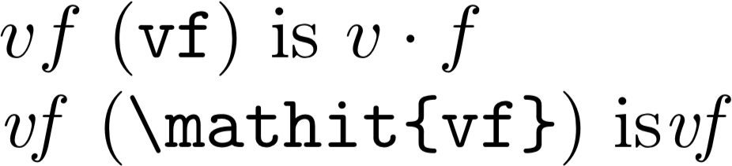
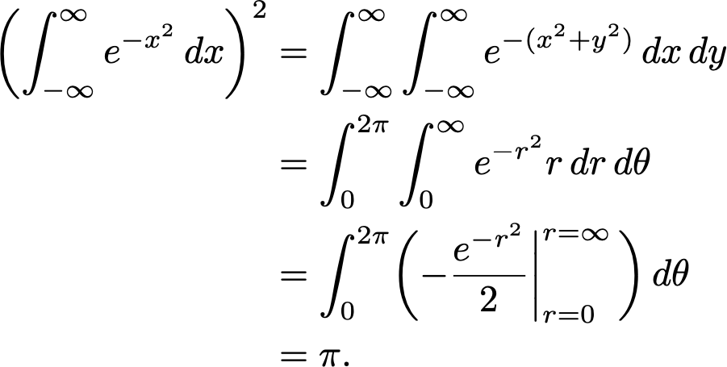
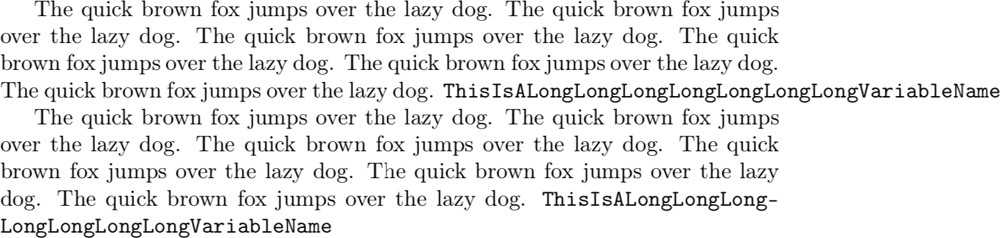
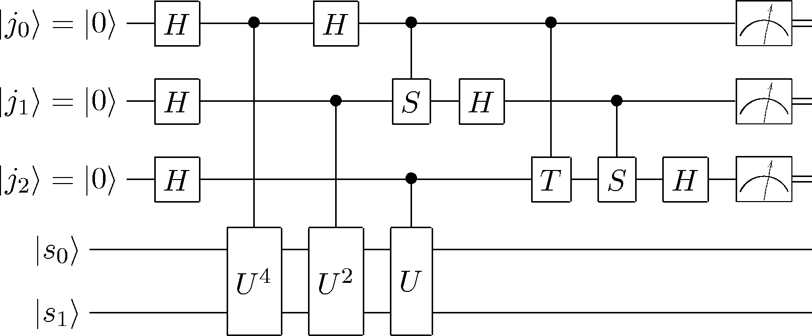

public: True class: center, middle # LaTeX 排版 蒋炎岩 <jyy@nju.edu.cn> <div class="row justify-content-md-center"> <div class="center author-block"> <p><a href="http://www.nju.edu.cn/">南京大学</a></p> <img class="inline-img" height="64px" src="../static/img/nju.png"/> </div> <div class="center author-block"> <p><a href="http://cs.nju.edu.cn/">计算机科学与技术系</a></p> <img class="inline-img" height="64px" src="../static/img/njucs.jpg"/> </div> <div class="center author-block"> <p><a href="http://ics.nju.edu.cn/">计算机软件研究所</a></p> <img class="inline-img" height="60px" src="../static/img/ics-nju.png"/> </div> </div> --- # WARNING Formal Methods 部分的论文难度急剧提升 * 请大家花足够时间仔细阅读 * 准备 talk 的目标：.red[尽可能把没有读过论文的同学讲懂] --- # 本讲概述 > 专业人士都使用 LaTeX 排版论文 > * Microsoft Word 对排版的控制实在是.red[太少了]，以至于经常需要用比较麻烦的 hacking 解决 fine-tuning > * 做个完美主义者——这会让读者感到你对你的 paper 是负责任的 ---- 本讲概述 * 基本排版：字、词、公式、段落 * 图：TikZ/pgfplots * 表 --- class: center, middle .center[] <br/> (sorry! 我没有时间用 beamer 准备这部分的 slides 了) --- class: center, middle # 字符 --- # 字体：为什么 LaTeX 文档看起来更好？ 字体的故事：Sans Serif vs. Serif * Helvetica/Arial/微软雅黑 vs. Times/Crimson/宋体 * [纪录片：Helvetica](https://www.bilibili.com/video/av14868042) * Web 时代的变革 * Web Fonts (网站：Crimson Text) ---- 一些模板使用的字体 * acmart: Linux Libertine * LaTeX 默认：Computer Modern Roman (CMR) --- # 字体：中英文混排 即便用了 font weight 更大的宋体，Times 依旧太粗了，抢夺了阅读的焦点 .center[] ---- .center[] --- # 字体：变化 .center[] --- class: center, middle # 词 --- # 连字 * Ligatures ```php for ($i = 0; $i <= 5; $i++) { if ($i == '2' || $pieces[$i] === 'red') { $hex__red = 0xca0000; $out[] = $hex__red >> 15; // 404 } elseif ($i !== 3 && $pieces[$i] != false) { $out[] = $pieces[$i]; } } echo implode('', $out); ``` ---- fi or ff <math>\huge \textrm{fi}; \textrm{ff}</math> * 这是为什么 pdf 复制出的文字不正确 --- # Kerning 根据字符调整间距 (TeX 系统已经自动搞定了) .center[] ---- TeX 系统对所有类型的 spacing 都有控制 * 在你对 spacing 感到不满意时，可以随意精调 * 你应该看到了 Knuth 对完美的执着 (请移步 [The TeXbook](http://www.ctex.org/documents/shredder/src/texbook.pdf)) --- # 数学公式 不美观的公式令观赏者头皮发麻 *  *  ---- 美观的公式让人惊叹 .center[] (但也有巨大的手工 tuning 的成本) --- class: center, middle # 段落 --- # 断字 有时候断字很令人讨厌……TeX 有一套相当复杂的文字处理系统 * 很多时候，用 `\-` 就可以 hack 了 * `\hyphenation`, `\babelhyphenation` 可能有用 * 面向 Web 编程 ---- .center[] --- # For Those Picky Guys Use `microtype`! * subliminal refinements towards typographical perfection ---- .center[<img src="../static/wiki/gser/2019/img/microtype.gif" width="680px"/>] ---- Quick quiz: * 用什么样的算法实现排版 (word wrap problem)？ --- # LaTeX 排版：Fun Facts LaTeX 排版是 .red[迭代算法] * 每一轮，根据上一轮计算出的结果 (aux 等) 计算出当前的结果 * 所以 fresh build 首次编译会得到没有引用的文档 * 提交文档一定小心，没有 reference 就会被 desk reject ---- 所以可能需要多轮才能得到 fixed point * table of contents：空白 → 正确的 TOC → 正确的 TOC 页码 * 可以构造出永远得不到 fixed point 的文档 --- class: center, middle # 图 --- # 为什么要画图？ 占用一大块面积，帮助读者直观地理解大量的内容 * 图 (非线性结构) vs. 文字 (线性结构) * 能够使用 visual signals 辅助理解 -- count: false ---- 注意 * .red[框图一定要提供足量的信息] * 不要：列几个大框，里面几个字；线性逻辑也能表达好 * .red[plotting 要用好空间] * 尽可能展示更多实验数据 (error bar 等) * .red[figure + caption 应做到 self-contained] * 使读者快速能通过图理解 --- # TikZ: 面向[样例](http://www.texample.net/tikz/examples/)编程 如果有兴趣，还是可以考虑学习一下！ * 和 TeX 系统的集成是最好的 * 例如，可以画线连接文档中的任意两个部件 <br/> .center[] --- class: center, middle # 表 --- # 为什么要列表？ 陈列某些有一定结构的数据，例如实验对象、实验结果等 -- count: false ---- 注意 * .red[使表格的内容更 readable] * 尽量不要贴一大堆数据，让读者自己找 * 使用辅助的 visual signals 帮助理解表格内容 * .red[table + caption 应做到 self-contained] * 再一次，尊重你的读者 * (minor) 精调表格的间距，使表格排版美观 --- class: center, middle # 例子选讲 (严格是好事：你的论文会让审稿人读起来更舒适) ---- (然而审稿人还是会千方百计拒绝你)